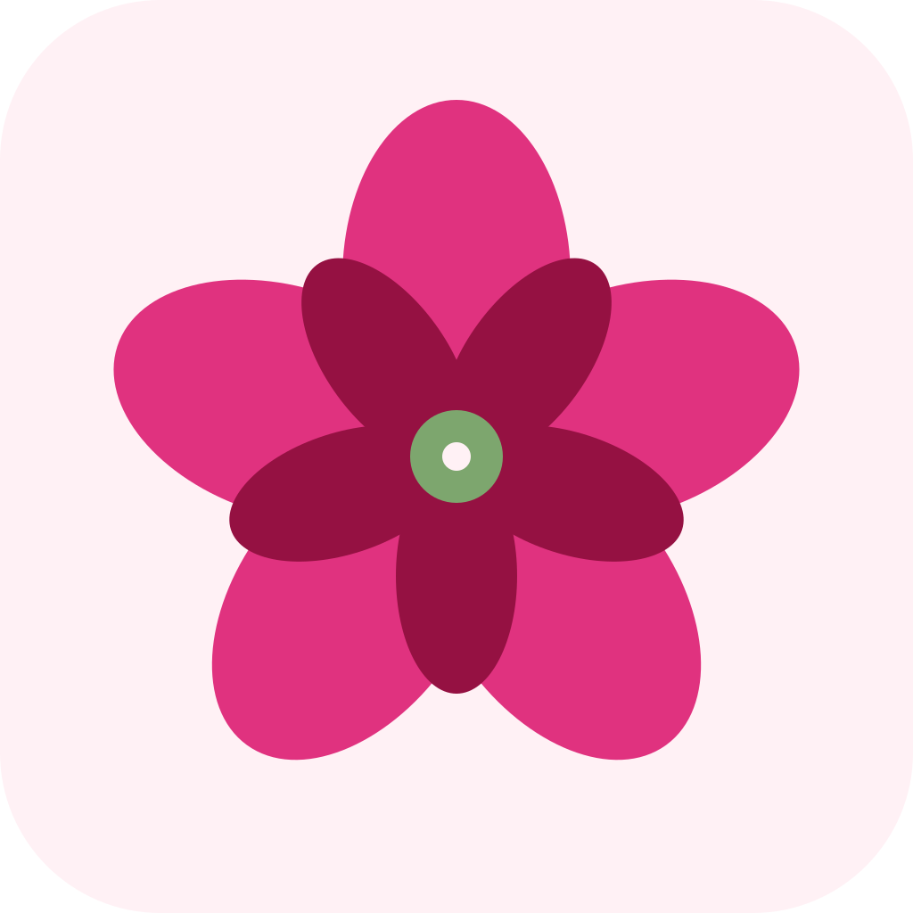

Fertility & cycle tracking for conception planning
Optional observations for today. These improve predictions over time and can help you spot ovulation without an OPK.
A rise of 0.4–0.9°F typically confirms ovulation. Track 2–3 cycles to spot your pattern.
Your cycle stats
Based on ACOG, Mayo Clinic, and Cleveland Clinic ovulation calculation methods.
Edit mode — tap a day to mark it:
Tap days to mark or unmark period days.
Logged days (solid) override predictions (faded). Stats update automatically as you log.
Cycle history & patterns
Built from period start dates you mark on the Calendar. A minimum of 2 cycles is needed to show pattern data. Cycles marked as atypical are shown but excluded from your averages.
Install on your device
Checking install support…
Installing adds the app to your home screen, enables offline access, and lets reminders show like a native app.
Appearance
Pick a theme. Phase colors stay consistent for medical clarity — only the backdrop and accent change.
When the app opens
Pick which tab opens first.
Notifications
Reminders use your most recent calculation on the Tracker tab. Re-calculate to refresh schedules.
Enable notifications
Master switch — turn off to silence everything
Notifications are scheduled by the app and stay on this device. Nothing is sent to a server.
Backup & restore (CSV)
Your cycle data is stored only on this device. Export a CSV to back up, move to another device, or share with your doctor. Importing merges into your existing data — same-date entries are overwritten.
Reset
Erase all cycle data, daily logs, inputs, and notification preferences from this device. Export to CSV first if you might want it back.
This app provides estimates based on average cycle patterns and is not a medical device. Always consult a healthcare provider for fertility concerns.
Sometimes a cycle behaves unusually for reasons unrelated to your normal fertility pattern. Marking it atypical excludes it from your cycle length averages so it doesn't throw off your predictions.
Common reasons a cycle may be atypical:
If unusual cycles happen frequently without a known reason, it may be worth mentioning to a doctor.